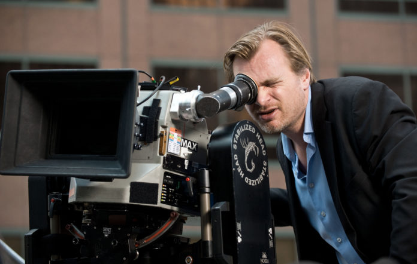

La realización, en el ámbito audiovisual, es el proceso por el cual se crea un vídeo. Usualmente, en el cine de producción industrial pueden distinguirse cinco etapas de realización: desarrollo, preproducción, rodaje, postproducción y distribución. La realización supone asumir decisiones tanto a nivel artístico como productivo, y la limitación únicamente está dada por los medios disponibles (presupuesto del que se dispone y equipo con que se cuenta).
El equipo técnico está formado por:
Producción:
El productor cinematográfico es el encargado de los aspectos organizativos y técnicos de la elaboración de una película, se podría decir que es el responsable de convertir la idea en película. Está a cargo de la contratación del personal, del financiamiento de los trabajos y del contacto con los distribuidores para la difusión de la obra. Si su tarea se limita a algunos aspectos puntuales del proceso técnico o creativo, se lo llama "co-productor".
También forman parte del área el director de producción, el productor ejecutivo, el jefe de locaciones y el asistente de producción.
Dirección:
El director cinematográfico es el profesional que dirige la filmación de una película, el responsable de la puesta en escena, dando pautas a los actores y al equipo técnico, tomando todas las decisiones creativas, siguiendo su estilo o visión particular, supervisando el decorado y el vestuario, y todas las demás funciones necesarias para llevar a buen término el rodaje.
También forman parte del área el asistente de dirección y el denominado script o continuista.

Guion:
El guionista es la persona encargada de confeccionar el guion, ya sea una historia original, una adaptación de un guion precedente o de otra obra literaria. Muchos escritores se han convertido en guionistas de sus propias obras literarias; dentro del guion cinematográfico se distinguen el guion literario o cinematográfico, que narra la película en términos de imagen (descripciones) y sonido (efectos y diálogo), y está dividido en actos y escenas. Es necesario distinguir el guion literario del guion técnico, que agrega al anterior una serie de indicaciones técnicas (tamaño de plano, movimientos de cámara, etc.) que sirven al equipo técnico en su labor y que, a diferencia del guion literario, suele elaborarlo el director, no el guionista.
También pueden colaborar con el guionista otros escritores (coguionistas) o contar con dialoguistas que están especializados en escribir diálogos.
El papel del guionista es muy importante, pues su trabajo es la base de todo el proyecto, si el guion es bueno el director puede hacer una película excelente, pero si este es deficiente aunque el director tenga muchos recursos, la película quedará vacía.
Sonido:
En rodaje, los encargados del sonido cinematográfico son el técnico de sonido y los microfonistas. En la postproducción se suman el editor de sonido, el compositor de la música incidental y los artistas de efectos sonoros (foley) y de doblaje, para generar la banda sonora original. El sonido es parte fundamental del cine ya que la percepción del sonido en el cine incluye: vibraciones interpretada por el cerebro a través del sistema auditivo (procedencia, intensidad, tonalidad, materiales, espacio etc.), cualidades del sonido estéticas como texturas y frecuencias, y cualidades del sonido psicológicas (sugerentes, agradables, inquietantes o molestas). También se manejan estímulos sonoros. El sonido es muy importante porque amplía los límites de la pantalla, soluciona problemas narrativos, cohesiona el montaje, influye en el espectador de forma inconsciente y transmite historias y emociones.
Fotografía:
El director de fotografía es la persona que determina cómo se va a ver la película, es decir que es quien determina, en función de las exigencias del director y de la historia, los aspectos visuales de la película; el encuadre, la iluminación, la óptica a utilizar etc. Es el responsable de toda la parte visual de la película, también desde el punto de vista conceptual, determinando la tonalidad general de la imagen y la atmósfera óptica de la película.
El equipo de fotografía es el más numeroso y se compone, además del director de fotografía, del camarógrafo, el primer asistente de cámara o foquista, el segundo asistente de cámara, el cargador de negativos, el gaffer o jefe de eléctricos, los eléctricos u operadores de luces, los grip u operadores de travelling o dolly, los estabilizadores de cámara (steady cam) y otros asistentes o aprendices.
Montaje
El montaje cinematográfico es la técnica de ensamblaje de las sucesivas tomas registradas en la película fotográfica para modelarlas en su forma narrativa, dramatúrgica y, específicamente, rítmica con el fin de construir frases audiovisuales: escenas y secuencias. Consiste en escoger (una vez que se ha rodado la película), ordenar y unir una selección de los planos registrados, según una idea y una dinámica determinada, a partir del guion, la idea del director y el aporte del montador. El montador sincroniza la imagen con el sonido (tarea habitualmente encomendada al ayudante de montaje). Visiona las tomas diarias junto al director y los miembros clave del equipo (el director de fotografía, que así supervisa su propio trabajo).
Hoy en día, muchas películas se montan en vídeo, y después ese montaje sirve de referencia para cortar y empalmar el negativo, que en sus inicios su base era de celuloide, y que posteriormente fue sustituido por acetato y poliéster, dada la alta peligrosidad del primero. La preparación de estas tomas diarias se desarrolla cada día a lo largo del rodaje de la película. La posproducción es el momento en que el montador ha reunido todo el material necesario para completar un primer montaje de la película. Después de que el director y el productor aprueban el montaje final, un montador de sonido especializado corrige los posibles problemas con este. Si fuera necesario, el montador de sonido regraba los diálogos en un estudio de grabación, mientras los actores ven en proyección la imagen correspondiente. Este proceso se conoce como doblaje. Los montadores de sonido reúnen las grabaciones y crean a veces nuevos sonidos (efectos sonoros) para intensificar la fuerza dramática de una escena. Mientras se prepara la banda de sonido, el montador también supervisa los efectos ópticos y los títulos que se van a incorporar a la película. Uno de los pasos finales es la preparación y la mezcla de las diferentes bandas sonoras en un único máster, primero magnético, que contendrá los diálogos, música, sonido directo y efectos de sonido, sincronizados con la imagen y adecuado al volumen de cada banda. La mezcla sin los diálogos hace posible el doblaje para la distribución de la película en otros idiomas.
Operador de cámara
Es el encargado de realizar y llevar a cabo todos los movimientos de cámara que sean necesarios para adaptarse al guion bajo la dirección del director.
Arte (Diseño de producción)
El área artística puede tener un director de arte o varios, de ser necesario. En el caso de haber más de uno, estos están coordinados por un diseñador de producción, quien está a cargo de la estética general de la película. Estos directores tendrán asistentes y encargados específicos, como escenógrafos, encargados de vestuario, modistas, maquilladores, peluqueros/as, utileros y otros miembros suplementarios como pintores, carpinteros o constructores. También dependen de esta área especialistas en los efectos visuales y ópticos que se realicen en el rodaje, así como otros efectos realizados durante la fase de postproducción.
Stunts
Doble es la persona encargada de salvaguardar la integridad del actor que no cuenta con las habilidades necesarias para realizar escenas de riesgo. Estos están preparados física y mentalmente, son personas capaces y acostumbradas para hacer actividades de riesgo al rodar escenas en cine.
Guion gráfico
El guion gráfico se utiliza para definir las secuencias, así como las variaciones de plano, gestos y posiciones de los actores, en cada una de las escenas antes de rodarla; en él vemos como si de un cómic se tratase la película completa. Además este elemento es fundamental para la buena comprensión del equipo técnico hacia lo que se va a rodar, incluyendo anotaciones con las dificultades de algunos planos o cosas a tener en cuenta.
En la creación de un storyboard, los personajes y el fondo se pueden retratar únicamente mediante siluetas, pero siempre recalcando los elementos importantes en la acción como pueden ser flechas para indicar movimiento de cámara o de actores, o la expresión de un actor en un plano determinado para cuidar hasta el más mínimo detalle y la producción sea excelente.
Distribución y exhibición:
Los distribuidores, generalmente empresas independientes de las productoras, compran los derechos de exhibición en salas de cine, o para su emisión por televisión, y venden los derechos de la película a los exhibidores (individuales o cadenas de exhibidores), cadenas de televisión, videoclubes u otros establecimientos donde se vendan las cintas de vídeo. Son también encargados de la publicidad y de la promoción de las películas, de hacer las copias necesarias para la exhibición y de controlar las cifras de ingresos y gastos. El productor cede al distribuidor un porcentaje de los ingresos de la película que por lo común alcanza el 50%. Además el distribuidor deduce de los beneficios del productor el importe de las copias de la película.
Los mercados secundarios son aquellos que proporcionan ingresos adicionales, que no eran el objetivo inicial de la producción. Estos mercados incluyen una diversidad de objetos: juguetes con el nombre de los personajes de la película (especialmente en el caso de las de dibujos animados), camisetas, publicación del guion, cortometrajes sobre las incidencias del rodaje (el cómo se hizo o making of) y grabaciones en disco, casete o compacto de la banda sonora original. Los productores buscarán compositores conocidos a los que ceden los derechos de la distribución fonográfica de su música.
Banda de diálogo
Es aquella sobre la que se registra el diálogo de la película, de efectos especiales, en la que se han montado todo tipo de sonidos ambientales que arropan a las acciones (tales como grillos, tráfico, pájaros, etc.)